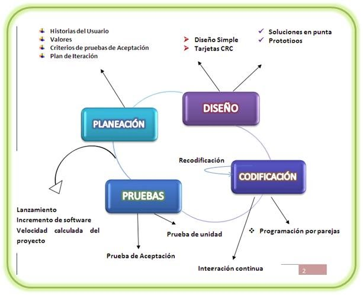

<div [@Contenido]  class="contenedor-tema">
    <section class="desarrollo">
        <div class="contenedor-title">
            <h2>Metodología XP</h2>
        </div>
        <div class="contenedor-desarrollo">
            <div class="contenedor-subtitle">
                <h3>La Metodología XP: la metodología de desarollo de software más existosa </h3><br><br>
                <p>La Metodología XP “Extreme Programming” o “Programación Extrema” es una de las llamadas metodologías
                    Ágiles de desarrollo de software más exitosas. Es habitual relacionarla con scrum, y la combinación
                    de ambas asegura un mayor control sobre el proyecto, y una implementación más efectiva y
                    eficiente.&nbsp;XP está diseñada para entregar el software que los clientes necesitan en el momento
                    en que lo necesitan. XP alienta a los desarrolladores a responder a los requerimientos cambiantes de
                    los clientes, aún en fases tardías del ciclo de vida del desarrollo.</p><br><br>
                    <div class="ytb"><youtube-player class ="video" videoId="h34e1ph0aPk" suggestedQuality="highres" [height]="360" [width]="640">
                    </youtube-player></div>
                    
                <p><b>CARACTERÍSTICAS DE LA METODOLOGÍA XP</b></p><br>
                <p></p>
                <ul style="text-align: left;">
                    <li>Comunicación constante entre el cliente y el equipo de desarrollo.</li>
                    <li>Respuesta rápida a los cambios constantes.</li>
                    <li>La planificación es abierta con un cronograma de actividades flexible.</li>
                    <li>El software que funciona está por encima de cualquier otra documentación.</li>
                    <li>Los requisito del cliente y el trabajo del equipo del proyecto son los principales factores de
                        éxito del mismo.</li>
                </ul>
                <div class="contenedor-imagenes"></div>
                <br>
                <p style="text-align: left;"><b>Fases:</b></p>
                <br>
                <ul style="text-align: left;">
                    <li><b>Exploracion</b>: En esta fase el cliente determina las funcionalidades del sistema. El equipo
                        empieza a familiarizarce con la metodolgía, los equipos y procesos que se van a utilizar durante
                        el desarrollo. La comunicacion con el cliente es esencial para evitar posibles fallos.
                    </li><br>
                    <li><b>Planificacion</b>: Las funcionalidades que se obtuvieron del cliente la reciben los
                        desarrolladores para la estimacion de costo y simplicarlas en tareas sencillas.&nbsp;</li><br>
                    <li><b>Iteracion</b>: El proyecto se divide en iteraciones de máximo 3 semanas, en cada iteración se
                        realiza la historia del usuario("funcionalidad") donde cada tarea se detalla, así mismo se
                        priorizan las tareas dejando en cola alas menos importantes. Se divide en equipos u cada equipo
                        teniendo tareas asignadas.</li><br>
                    <li>&nbsp;<b>Producción</b>: Se entrega el primer prototipo del software y el usuario decide si se
                        lo pone en producción o faltan funcionalidades y se sigue con las iteraciones Fase de
                        Mantenimiento Con el proyecto y todas las funcionalidades</li>
                </ul>

                <br>
                <div class="contenedor-imagenes"></div><br>
                <div>
                    <p style="text-align: left;"><b>Valores del Extreme Programming</b></p><br>
                </div>
                <div>
                    <ul style="text-align: left;">
                        <li>Comunicación Como comunicación entendemos no solo una buena interacción interna entre los
                            propios miembros del equipo de desarrolladores, sino también con los clientes.</li>
                    </ul>
                    <br>
                    <ul style="text-align: left;">
                        <li>Simplicidad Empezar con la solución más simple es clave en la programación XP. Esta
                            metodología pone el foco en codificar las necesidades de hoy, no las de un futuro.</li>
                    </ul>
                    <br>
                    <ul style="text-align: left;">
                        <li>Feedback Una de las mayores ventajas de que el cliente esté integrado en el proyecto
                            es que su opinión sobre el estado de este lo podemos conocer en tiempo real.;</li>
                    </ul>
                    <ul style="text-align: left;">
                        <li>Respeto El respeto mutuo es fundamental para que un equipo pueda trabajar de forma eficiente
                            y ofrecer un buen rendimiento.</li>
                    </ul>
                    <br>
                    <ul style="text-align: left;">
                        <li>Valentía Diseñar y programar para hoy y no para mañana implica valentía en la metodología
                            XP, así como reconocer los errores tan pronto como se detecten.</li>
                    </ul>
                </div>

            </div>
        </div>

    </section>
</div>